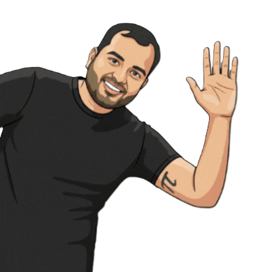

Learning Hub Tabs
Chapter Summary
Natural resources become useful resources when humans can access, understand, and responsibly use them. They support life, provide materials, and power development. Sustainable use balances present needs with future generations.
Chapter Examination
- Define natural resources with two examples.
- Differentiate renewable and non-renewable resources.
- Why is groundwater conservation important?
- Give two examples of sustainable practices in your area.
- How can technology improve resource management?
NCERT Solutions (Quick Pointers)
- Nature becomes a resource when utility and accessibility combine with human need.
- Renewables regenerate naturally; non-renewables form over very long periods.
- Conservation requires community participation, policy support, and scientific planning.
- Overuse causes pollution, biodiversity loss, and long-term economic stress.
Learn & Fun Activities
- Create a one-week home water usage tracker and suggest reduction steps.
- Make a recyclable-resource collage from newspaper and label categories.
- Run a class debate: Development vs Sustainable Development.
- Design a "Save Resources" poster for your neighborhood.
Flash Cards
Auto-Check Quiz (12 MCQs)
Let's Dive into details !
"Concerned social scientists are clear on what we need to do: we must move toward a regenerative economy, an economy that operates in harmony with nature, repurposing used resources, minimizing waste, and replenishing depleted resources. We must return to the innate wisdom of nature herself, the ultimate regenerator and recycler of all resources."
- Christiana Figueres and Tom Rivett-Carnac in 'The Future We Choose'

When does Nature become a Resource?
Nature includes life and non-life forms around us. These become resources when humans use them for sustenance or to create useful goods.
- A thing should be technologically accessible to be used as a resource.
- Its use should be economically feasible and culturally acceptable.
- Examples include water, air, soil, coal, petroleum, metal ores and timber.
प्रकृति में जीवित और निर्जीव दोनों तत्व शामिल हैं। ये तभी संसाधन बनते हैं जब मनुष्य इन्हें अपनी जरूरतें पूरी करने या उपयोगी वस्तुएं बनाने में इस्तेमाल करता है।
- किसी संसाधन का तकनीकी रूप से सुलभ होना जरूरी है।
- उसका उपयोग आर्थिक रूप से संभव और सांस्कृतिक रूप से स्वीकार्य होना चाहिए।
- उदाहरण: जल, वायु, मिट्टी, कोयला, पेट्रोलियम, धातु अयस्क और लकड़ी।
Categories of Natural Resources
We categorize natural resources to understand them better and communicate clearly. One useful way is to classify by use: life, materials, and energy.
- Resources essential for life: air, water, food-supporting soil.
- Resources for materials: wood, fibers, metals, minerals.
- Resources for energy: coal, petroleum, natural gas, wind, sunlight.
प्राकृतिक संसाधनों को समझने और स्पष्ट रूप से बताने के लिए उनका वर्गीकरण किया जाता है। एक उपयोगी तरीका है उपयोग के आधार पर वर्गीकरण: जीवन, सामग्री और ऊर्जा।
- जीवन हेतु संसाधन: वायु, जल, भोजन देने वाली मिट्टी।
- सामग्री हेतु संसाधन: लकड़ी, रेशा, धातु, खनिज।
- ऊर्जा हेतु संसाधन: कोयला, पेट्रोलियम, गैस, पवन और सूर्य प्रकाश।
Resources for Life, Materials and Energy
The chapter next explains resources by the work they do in human life: some sustain life, some provide materials, and some supply energy.
Resources for Life
Air, water and food-giving soil are essential for human survival.
Resources for Materials
Wood, stone, fibres and metals help us make useful and beautiful objects.
Resources for Energy
Coal, petroleum, gas, sunlight, wind and water run homes, transport and industry.
Quick Check
- Why are air and water called life-supporting resources?
- How is wood both a natural gift and a material resource?
अध्याय आगे संसाधनों को उनके उपयोग के आधार पर समझाता है: कुछ जीवन के लिए आवश्यक हैं, कुछ वस्तुएं बनाने में काम आते हैं, और कुछ ऊर्जा देते हैं।
जीवन हेतु संसाधन
वायु, जल और भोजन देने वाली मिट्टी मानव जीवन के लिए आवश्यक हैं।
सामग्री हेतु संसाधन
लकड़ी, पत्थर, रेशा और धातुएं उपयोगी व सुंदर वस्तुएं बनाने में काम आती हैं।
ऊर्जा हेतु संसाधन
कोयला, पेट्रोलियम, गैस, सूर्य, पवन और जल घर, यातायात और उद्योग चलाते हैं।
झटपट जांच
- वायु और जल को जीवन-सहायक संसाधन क्यों कहा जाता है?
- लकड़ी प्राकृतिक उपहार भी कैसे है और सामग्री संसाधन भी कैसे?
Cultural Practices and Ecological Mindfulness
Many communities treat nature as sacred and follow practices that reduce ecological damage and preserve balance.
- Gentle farming and low-disturbance methods help retain soil moisture.
- Forest produce like honey is harvested while keeping ecosystems alive.
- Community rituals often reinforce care for plants and local biodiversity.
कई समुदाय प्रकृति को पवित्र मानते हैं और ऐसे व्यवहार अपनाते हैं जो पर्यावरणीय नुकसान को कम करते हैं और संतुलन बनाए रखते हैं।
- हल्की जुताई और संतुलित खेती मिट्टी की नमी बचाती है।
- जंगल उत्पाद जैसे शहद का संग्रह पारिस्थितिकी को बचाते हुए किया जा सकता है।
- समुदाय आधारित परंपराएं पौधों और जैव विविधता की रक्षा को बढ़ावा देती हैं।
Responsible and Wise Use: Stewardship
Stewardship means respecting nature and using resources in ways that support regeneration of renewables and careful use of non-renewables.
- Groundwater extraction must not exceed recharge rates.
- Traditional water harvesting and pond rejuvenation help restoration.
- Overfishing and pollution need strict community and policy regulation.
- Sustainable agriculture practices improve long-term soil and yield health.
स्टीवर्डशिप का अर्थ है प्रकृति का सम्मान करते हुए संसाधनों का ऐसा उपयोग करना जिससे नवीकरणीय संसाधनों का पुनर्जनन हो और अनवीकरणीय संसाधनों का सोच-समझकर उपयोग हो।
- भूजल निकासी पुनर्भरण दर से अधिक नहीं होनी चाहिए।
- पारंपरिक जल-संचयन और तालाब पुनर्जीवन बहाली में मदद करते हैं।
- अतिरिक्त मछली पकड़ना और प्रदूषण नियंत्रित होना चाहिए।
- सतत कृषि से मिट्टी और उत्पादन दोनों दीर्घकाल में बेहतर होते हैं।
Before We Move On
Natural resources are materials and substances that occur in nature and are valuable to humans. There are different ways of categorising resources, and renewable as well as non-renewable are useful categories. The resource curse can be overcome through investment in technology and skills, while careful use of renewables and wise use of non-renewables help stretch them for longer.
Questions and Activities
- What can make what is today a renewable resource non-renewable tomorrow? Describe actions that can prevent this.
- Name five ecosystem functions that serve humans.
- What are renewable resources? How are they different from non-renewable ones? Give two examples for sustainable use.
- Identify cultural practices in your home and neighbourhood that point to mindful use of natural resources.
- What considerations should be kept in mind in the production of goods for current use?
प्राकृतिक संसाधन वे पदार्थ हैं जो प्रकृति में पाए जाते हैं और मनुष्यों के लिए मूल्यवान होते हैं। संसाधनों का वर्गीकरण कई तरीकों से किया जा सकता है, और नवीकरणीय तथा अनवीकरणीय उपयोगी श्रेणियां हैं। तकनीक और कौशल में निवेश से संसाधन-संकट कम किया जा सकता है, और सावधानीपूर्वक उपयोग से संसाधन लंबे समय तक उपलब्ध रहते हैं।
प्रश्न और गतिविधियां
- आज का नवीकरणीय संसाधन कल अनवीकरणीय कैसे बन सकता है? इसे रोकने के उपाय लिखिए।
- मनुष्यों के लिए उपयोगी पारिस्थितिकी तंत्र के पांच कार्य बताइए।
- नवीकरणीय और अनवीकरणीय संसाधनों में अंतर बताकर दो उदाहरण दीजिए।
- अपने घर और पड़ोस की ऐसी सांस्कृतिक परंपराएं बताइए जो संसाधनों के सजग उपयोग को दिखाती हों।
- वर्तमान उपयोग हेतु वस्तुओं के उत्पादन में किन बातों का ध्यान रखना चाहिए?
Auto-Check Quiz स्वतः जांच क्विज
Answer the questions and click check to get instant feedback with your score. प्रश्नों के उत्तर दें और जांच बटन दबाकर तुरंत फीडबैक और स्कोर देखें।
Printable Worksheet प्रिंट योग्य वर्कशीट
A. Fill in the blanksA. रिक्त स्थान भरें
1. Nature becomes a resource due to its ________.प्रकृति अपनी ________ के कारण संसाधन बनती है।
2. Coal and petroleum are ________ resources.कोयला और पेट्रोलियम ________ संसाधन हैं।
3. Sustainable development protects ________ generations.सतत विकास ________ पीढ़ियों की रक्षा करता है।
B. Short Answer (2-3 lines each)B. लघु उत्तर (प्रत्येक 2-3 पंक्तियां)
1. How does technology increase resource value?तकनीक संसाधनों का मूल्य कैसे बढ़ाती है?
2. Differentiate between biotic and abiotic resources.जैविक और अजैविक संसाधनों में अंतर लिखें।
C. Long AnswerC. दीर्घ उत्तर
Explain why conservation is necessary for sustainable development with one local example.एक स्थानीय उदाहरण सहित बताइए कि सतत विकास के लिए संरक्षण क्यों आवश्यक है।